第11讲 · 一元函数积分学的应用（二）——积分等式与积分不等式
据《张宇考研数学基础30讲·高等数学分册（2026版）》整理 · 覆盖原书 P329–P340
本讲导读
本讲只干两件事：证积分等式、证积分不等式，考研题型就是解答题（也可能出难度大的小题）。它是第6讲"微分等式与微分不等式"的积分续篇——那边靠微分中值定理，这边多了一整套积分工具：推广的积分中值定理、夹逼准则、分部积分、牛顿-莱布尼茨公式。张宇在知识结构图里把积分等式标成"重中之重"，积分不等式标注"会出大题或者难度大的小题"。动手前建议先把第8讲的积分比较性质（保号性）和第2讲的夹逼准则捡回来。做题先看条件档位——连续、一阶可导还是二阶可导，条件直接决定走哪条路。原书考情分析把重难点写成两句话：①求积分；②求积分后再求极限（印P329）——次序别记反，极限永远在积分算完（或放缩完）之后才登场。
站注·真题大数据：本讲在真题里属"证明题储备"型考点，高频入口是变限积分构造函数＋单调性、分部积分出对称结构；与之共享骨架的中值定理类证明题在近15年真题里属第二梯队——隔年一道大题（站注素材包 C-L11、C-L6、B 口径）。一考就是大题的考点，平时不动手，考场上一定写不出来。
知识框架
- 积分等式（重中之重，常考 \(\int\) 与 \(\lim\int\) 两型）
- 用中值定理：推广的积分中值定理（柯西中值定理证，"常数变量化"），注意中值点何时依赖参数（例11.1、例11.2）
- 用夹逼准则：凑微分 + 放缩 + 夹逼
- 一般结论 \(\lim\limits_{n\to\infty}\int_0^1 x^n f(x)\,\mathrm{d}x=0\)（蓝框，\(f\in C[0,1]\)）
- 配套极限 \(\lim\limits_{t\to0^+}t^a\ln t=0\ (a>0)\)，分部积分的边界项要用（例11.3、例11.4）
- 周期函数 + 整数部分夹逼 + 倒数不等式（例11.5）
- 用积分法：恒等变形、换元法、分部积分法（"函数×高阶导数"就往回凑；习题11.3 变限被积函数型）
- 积分不等式（会出大题或难度大的小题）
- 用函数的单调性：变限量化 → 移项构造辅助函数 → 求导判号 → \(F(a)=0\) 收尾（例11.7）
- 用拉格朗日中值定理：条件"f 一阶可导"、端点值简单；常分段使用（例11.8）
- 用泰勒公式：条件"f 二阶可导"、题中有简单函数值；展开点选已知值点（例11.9）
- 用积分法：分部积分处理"函数 × 三角函数"型，收尾用 \(|\cos nx|\le1\) 与第8讲比较性质（例11.10）
- 用牛顿-莱布尼茨公式：把 \(f(x)\) 写成 \(\int f'(t)\,\mathrm{d}t\) 联系 \(f\) 与 \(f'\)；端点值为零时左右各写一次相加取半（例11.11）
- 总纲（11.5注，印P340）：对 \(\big|\int f\big|\) 作估计只需对被积函数估计；联系 \(f\) 与 \(f'\) 只有两招——拉格朗日中值定理、牛顿-莱布尼茨公式
核心概念与定理
一、积分等式：用中值定理（推广的积分中值定理）
定理（印P330，例11.1(1)）：设 \(f(x),g(x)\) 在 \([a,b]\) 上连续，且 \(g(x)\) 在 \([a,b]\) 上不变号，则存在 \(\xi\in(a,b)\)，使得
\[\int_a^b f(x)g(x)\,\mathrm{d}x=f(\xi)\int_a^b g(x)\,\mathrm{d}x.\]
什么时候走这条路：要证的等式里有一个"积分号乘连续函数"想提出去，或要求 \(\lim\limits_{n\to\infty}\int_a^b f(x)g_n(x)\,\mathrm{d}x\) 型极限。关键构造是"常数变量化"：令 \(F(x)=\int_a^x f(t)g(t)\,\mathrm{d}t\)，\(G(x)=\int_a^x g(t)\,\mathrm{d}t\)，对 \(F,G\) 用柯西中值定理——柯西中值定理天生就是处理"两个函数联动"的。\(g(x)\equiv1\) 时退化为第8讲的积分中值定理。书上说：考试可直接使用。
二、中值点何时"跟着动"：三条使用注意
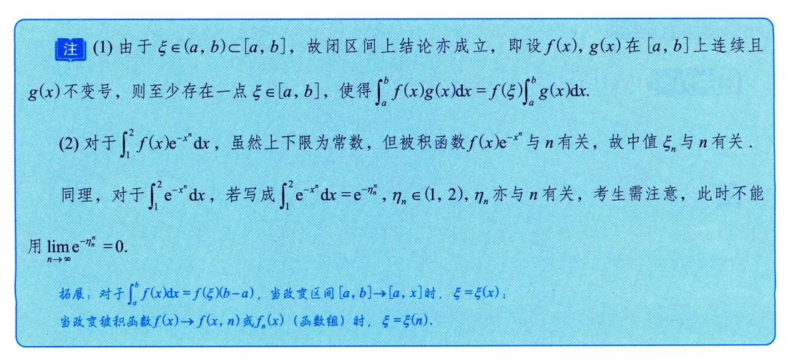
这张注要圈起来。第一，由 \(\xi\in(a,b)\subset[a,b]\)，结论在闭区间上也成立（注1）。第二，被积函数含参数 \(n\) 时，中值点跟着动：\(\int_1^2 f(x)e^{-x^n}\,\mathrm{d}x=f(\xi_n)\int_1^2 e^{-x^n}\,\mathrm{d}x\) 里的 \(\xi_n\) 与 \(n\) 有关；把 \(\int_1^2 e^{-x^n}\,\mathrm{d}x\) 写成 \(e^{-\eta_n^n}\)（\(\eta_n\in(1,2)\)）后，\(\eta_n\) 也与 \(n\) 有关，不能写 \(\lim\limits_{n\to\infty}e^{-\eta_n^n}=0\)（注2）——正确的收尾永远是"有界 × 无穷小"。拓展记忆：区间变上限 \([a,x]\) 时 \(\xi=\xi(x)\)；被积函数含 \(n\) 时 \(\xi=\xi(n)\)。
三、积分等式：用夹逼准则
思路：把含 \(n\) 的积分放缩成能算的上下界，用积分保号性（被积函数逐点比较则积分比较）夹出极限。收尾常配这个蓝框结论：
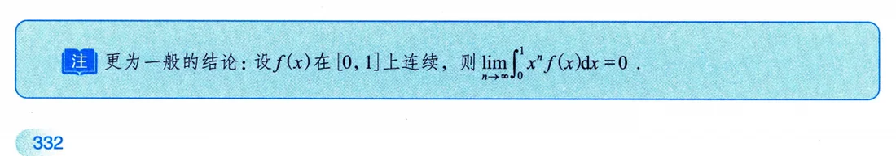
即：设 \(f(x)\) 在 \([0,1]\) 上连续，则 \(\lim\limits_{n\to\infty}\int_0^1 x^n f(x)\,\mathrm{d}x=0\)。证明就是 \(m\le f(x)\le M\) 三面夹：\(mx^n\le x^nf(x)\le Mx^n\)，积分得
\[\frac{m}{n+1}\le\int_0^1x^nf(x)\,\mathrm{d}x\le\frac{M}{n+1}\to0.\]
顺手再记一个：\(\lim\limits_{t\to0^+}t^a\ln t=0\ (a>0)\)，分部积分的边界项要用（例11.4 的 \(\frac{t^{n+1}}{n+1}\ln t\big|_0^1\) 就是它消掉的）。
四、积分等式：用积分法
恒等变形、换元法、分部积分法。见到"函数 × 高阶导数"同台，就分部积分往回凑（例11.6 一次证出 \(f\) 与 \(f''\) 的积分等式）；被积函数里嵌着变限积分（如 \(\int_0^{f(x)}\varphi(t)\,\mathrm{d}t\)），也是分部积分把它拆开（习题11.3）。凑微分是本讲出场率最高的动作。
五、积分不等式：用函数的单调性
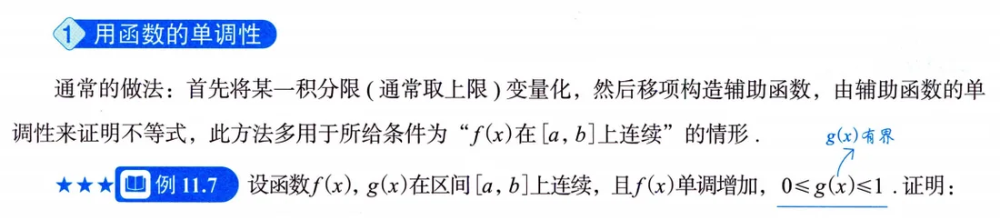
方法框原文（印P334）：首先将某一积分限（通常取上限）变量化，然后移项构造辅助函数，由辅助函数的单调性来证明不等式；多用于所给条件为"\(f(x)\) 在 \([a,b]\) 上连续"的情形。完整流程四步：把积分上限变化量化 \(\to\) 移项构造辅助函数 \(\to\) 求导判号 \(\to\) 由 \(F(a)=0\) 推 \(F(b)\le0\) 收尾。上限里嵌着变限积分时，求导别丢链式法则的内层导数（例11.7 就是这么干的）。
六、积分不等式：用拉格朗日中值定理
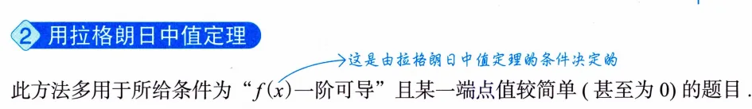
方法框原文（印P335）：多用于所给条件为"\(f(x)\) 一阶可导"且某一端点值较简单（甚至为 0）的题目——这是由拉格朗日中值定理的条件决定的。口诀（书上手写批注）：见到 \(f(x),f'(x)\)，想拉格朗日中值定理。常配合分段使用（例11.8 把 \([0,1]\) 拆两段各用一次）、绝对值不等式 \(|a+b|\le|a|+|b|\) 与积分比较性质。
七、积分不等式：用泰勒公式
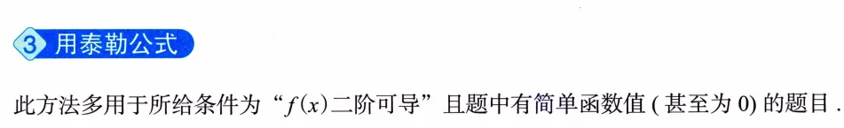
方法框原文（印P335）：多用于"\(f(x)\) 二阶可导"且题中有简单函数值（甚至为 0）的题目。在已知值点 \(x_0\) 处展开；若像 \(\int_0^{2x_0}(x-x_0)\,\mathrm{d}x=0\) 这样能把一阶项积分为零，证明会非常干净（例11.9 就是范本：区间 \([0,2]\) 恰关于 \(x_0=1\) 对称）。
八、积分不等式：用积分法
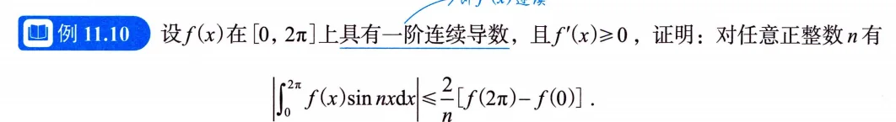
方法框原文（印P336）：主要用于处理被积函数为"两项相乘"的形式（如 \(f(x)\sin x\) 等），采用分部积分法，并利用第8讲讲过的性质——若在 \([a,b]\) 上 \(f(x)\le g(x)\)，则 \(\int_a^bf(x)\,\mathrm{d}x\le\int_a^bg(x)\,\mathrm{d}x\)。分部积分把"不好估的 \(f\)"换成"好估的 \(f'\)"，\(n\) 藏在三角函数的周期里，收尾靠 \(|\cos nx|\le1\) 和 \(\int f'=f(b)-f(a)\)（例11.10）。
九、积分不等式：用牛顿-莱布尼茨公式
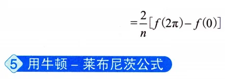
方法框原文（印P336）：多用于所给条件为"\(f'(x)\) 连续"且某两个函数值较简单（甚至为 0）的题目，这是由牛顿-莱布尼茨公式需要的条件所决定的。关键动作就是把 \(f(x)\) 写成 \(f(x)-f(a)=\int_a^xf'(t)\,\mathrm{d}t\)，两边取绝对值再积分放缩（例11.11：\(f(a)=f(b)=0\) 时左右各写一遍、相加取半，直接得到 \(\frac12\int_a^b|f'|\)）。
十、总纲：联系 \(f\) 与 \(f'\) 只有两招
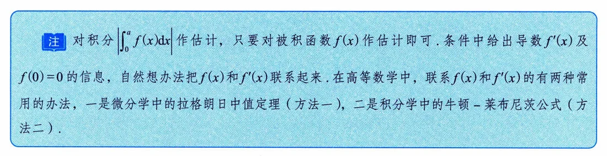
这张注（印P340）是全讲的总纲，原文复述：对积分 \(\big|\int_0^af(x)\,\mathrm{d}x\big|\) 作估计，只要对被积函数 \(f(x)\) 作估计即可。条件中给出导数 \(f'(x)\) 及 \(f(0)=0\) 的信息，自然想办法把 \(f(x)\) 和 \(f'(x)\) 联系起来。在高等数学中，联系 \(f(x)\) 和 \(f'(x)\) 的有两种常用的办法，一是微分学中的拉格朗日中值定理，二是积分学中的牛顿-莱布尼茨公式。判断题走哪条路，先看这句。
典型例题精讲
例11.1（推广的积分中值定理 + 有界乘无穷小）
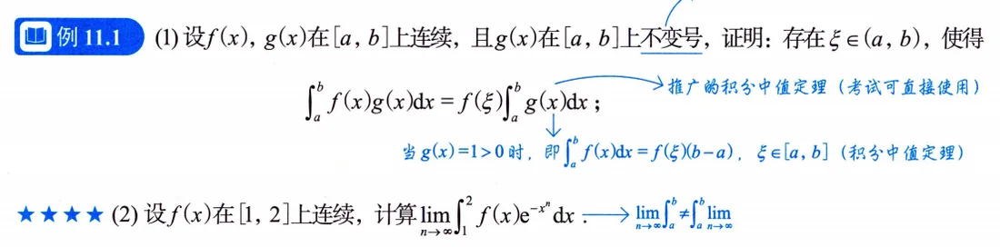
题目 (1) 设 \(f(x),g(x)\) 在 \([a,b]\) 上连续，且 \(g(x)\) 在 \([a,b]\) 上不变号，证明存在 \(\xi\in(a,b)\)，使 \(\int_a^bf(x)g(x)\,\mathrm{d}x=f(\xi)\int_a^bg(x)\,\mathrm{d}x\)；(2) 设 \(f(x)\) 在 \([1,2]\) 上连续，求 \(\lim\limits_{n\to\infty}\int_1^2f(x)e^{-x^n}\,\mathrm{d}x\)。
思路 (1) 证推广的积分中值定理，关键动作是"常数变量化"：把端点处的定积分装进变限积分 \(F,G\)，再上柯西中值定理；(2) 直接套 (1) 把 \(f\) 提出来，剩下夹逼 \(\int_1^2e^{-x^n}\,\mathrm{d}x\)。
要点 (1) 若 \(g\equiv0\) 结论显然；若 \(g\not\equiv0\)，不妨设 \(g(x)>0\)，则 \(\int_a^bg(x)\,\mathrm{d}x>0\)。令 \(F(x)=\int_a^xf(t)g(t)\,\mathrm{d}t,\ G(x)=\int_a^xg(t)\,\mathrm{d}t\)，在 \([a,b]\) 上用柯西中值定理：
\[\frac{\int_a^bf(x)g(x)\,\mathrm{d}x-0}{\int_a^bg(x)\,\mathrm{d}x-0}=\frac{F'(\xi)}{G'(\xi)}=\frac{f(\xi)g(\xi)}{g(\xi)}=f(\xi),\qquad \xi\in(a,b),\]
其中 \(g(\xi)\ne0\)；\(g(x)<0\) 时同理。(2) 由 (1)，\(\int_1^2f(x)e^{-x^n}\,\mathrm{d}x=f(\xi_n)\int_1^2e^{-x^n}\,\mathrm{d}x\)，\(1<\xi_n<2\)；\(f\) 在 \([1,2]\) 连续故 \(f(\xi_n)\) 有界。又 \(e^{x^n}>x^n+1>x^n\)（不等式 \(\lim\limits_{n\to\infty}\left(1+\frac1n\right)^n=e\) 的推论），故
\[0<\int_1^2e^{-x^n}\,\mathrm{d}x<\int_1^2x^{-n}\,\mathrm{d}x=\frac{2^{1-n}-1}{1-n}\xrightarrow[n\to\infty]{}0,\]
由夹逼准则 \(\int_1^2e^{-x^n}\,\mathrm{d}x\to0\)，于是原极限 \(=0\)（有界 × 无穷小）。
注 \(\xi_n\) 与 \(n\) 有关，别对 \(f(\xi_n)\) 取极限，见"核心概念二"的注截图（印P331）。
例11.2（积分条件翻译成函数值，罗尔 + 两次拉格朗日）
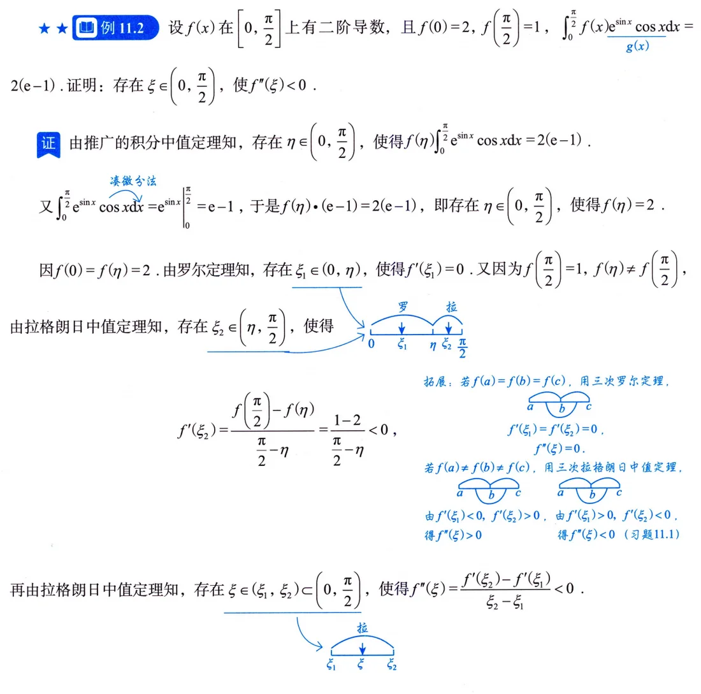
题目 设 \(f(x)\) 在 \([0,\frac{\pi}{2}]\) 上二阶可导，\(f(0)=2\)，\(f\left(\frac{\pi}{2}\right)=1\)，\(\int_0^{\pi/2}f(x)e^{\sin x}\cos x\,\mathrm{d}x=2(e-1)\)，证明存在 \(\xi\in\left(0,\frac{\pi}{2}\right)\) 使 \(f''(\xi)<0\)。
思路 先把积分条件"翻译"成函数值：凑微分 \(\int_0^{\pi/2}e^{\sin x}\cos x\,\mathrm{d}x=e^{\sin x}\big|_0^{\pi/2}=e-1\)，用推广积分中值定理得 \(f(\eta)=2\)；然后把 \(2,2,1\) 三个函数值摆在数轴上，相等用罗尔、不等用拉格朗日。
要点 存在 \(\eta\in\left(0,\tfrac{\pi}{2}\right)\) 使 \(f(\eta)(e-1)=2(e-1)\)，即 \(f(\eta)=2\)。由 \(f(0)=f(\eta)=2\)，罗尔定理给 \(\xi_1\in(0,\eta)\)，\(f'(\xi_1)=0\)；由 \(f(\eta)=2\ne1=f\left(\tfrac{\pi}{2}\right)\)，拉格朗日中值定理给 \(\xi_2\in\left(\eta,\tfrac{\pi}{2}\right)\)：
\[f'(\xi_2)=\frac{f\left(\tfrac{\pi}{2}\right)-f(\eta)}{\tfrac{\pi}{2}-\eta}=\frac{1-2}{\tfrac{\pi}{2}-\eta}<0.\]
再对 \(f'\) 在 \([\xi_1,\xi_2]\) 上用拉格朗日中值定理，存在 \(\xi\in(\xi_1,\xi_2)\subset\left(0,\tfrac{\pi}{2}\right)\)：
\[f''(\xi)=\frac{f'(\xi_2)-f'(\xi_1)}{\xi_2-\xi_1}<0.\]
注 书上配了拓展（印P331）：若 \(f(a)=f(b)=f(c)\)，用三次罗尔定理；若三点函数值互不相等，用三次拉格朗日中值定理（示意图标着 \(f'(\xi_1)<0,\ f'(\xi_2)>0\Rightarrow f''(\xi)>0\) 的链路）——习题 11.1 就是这个模板。
例11.3（凑微分 + 夹逼：选择题）
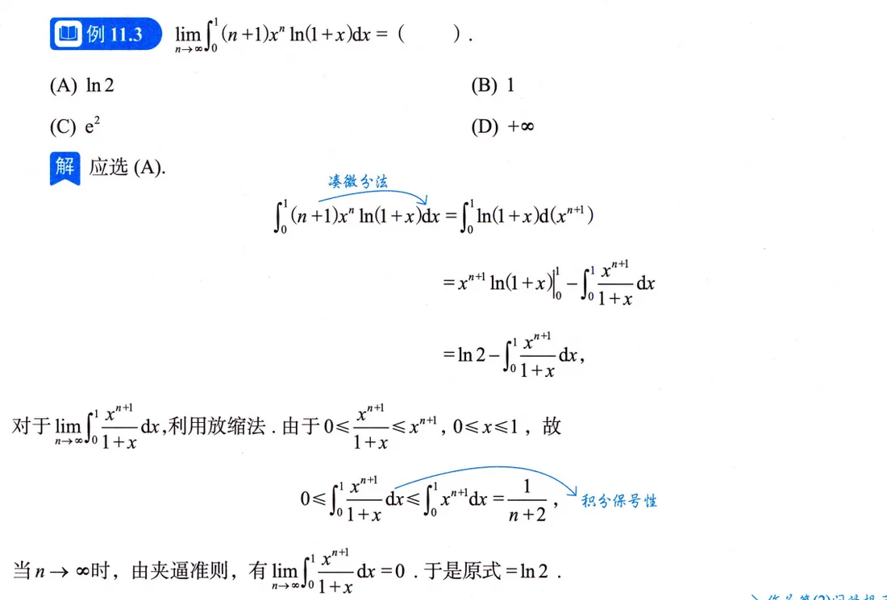
题目 \(\lim\limits_{n\to\infty}\displaystyle\int_0^1(n+1)x^n\ln(1+x)\,\mathrm{d}x=\)（ ）。(A) \(\ln 2\) (B) \(1\) (C) \(e^2\) (D) \(+\infty\)
思路 见到 \((n+1)x^n\,\mathrm{d}x\) 先凑微分 \(\mathrm{d}(x^{n+1})\)，分部积分把 \(n\) 全赶到边界上去，剩下的尾巴用夹逼掐掉。这是"\(\lim\int\)"型的标准两步。
要点 应选 (A)。
\[\int_0^1(n+1)x^n\ln(1+x)\,\mathrm{d}x=\int_0^1\ln(1+x)\,\mathrm{d}\left(x^{n+1}\right)=\ln(1+x)\,x^{n+1}\Big|_0^1-\int_0^1\frac{x^{n+1}}{1+x}\,\mathrm{d}x=\ln 2-\int_0^1\frac{x^{n+1}}{1+x}\,\mathrm{d}x,\]
其中边界项在 \(x=0\) 处为零、\(x=1\) 处为 \(\ln2\)。再放缩尾巴：\(0\le\displaystyle\int_0^1\frac{x^{n+1}}{1+x}\,\mathrm{d}x\le\int_0^1x^{n+1}\,\mathrm{d}x=\frac{1}{n+2}\to0\)，由夹逼准则尾巴 \(\to0\)，故极限 \(=\ln 2\)。
注 别看被积函数 \((n+1)x^n\ln(1+x)\) 在 \(x=1\) 附近不收敛（\(n+1\) 发散）就想当然选 \(+\infty\)——分部之后 \(n\) 只剩 \(\frac{1}{n+2}\) 的量级。
例11.4（比大小 + 夹逼求极限，典型考研命题形式）
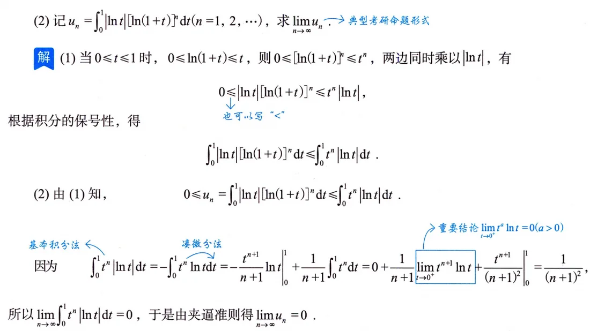
题目 \(u_n=\displaystyle\int_0^1|\ln t|\,[\ln(1+t)]^n\,\mathrm{d}t\)，\(n=1,2,\cdots\)。(1) 证明 \(u_n\le\displaystyle\int_0^1t^n|\ln t|\,\mathrm{d}t\)；(2) 求 \(\lim\limits_{n\to\infty}u_n\)。
思路 夹逼两步走：先用 \(0\le\ln(1+t)\le t\ (0\le t\le1)\) 比出大小，再算上界的极限。
要点 (1) 当 \(0\le t\le1\) 时 \(0\le[\ln(1+t)]^n\le t^n\)，两边同乘 \(|\ln t|(\ge0)\)，再由积分保号性：
\[\int_0^1|\ln t|\,[\ln(1+t)]^n\,\mathrm{d}t\le\int_0^1t^n|\ln t|\,\mathrm{d}t.\]
(2) 对上界分部积分（边界项用 \(\lim\limits_{t\to0^+}t^{n+1}\ln t=0\)）：
\[\int_0^1t^n|\ln t|\,\mathrm{d}t=-\int_0^1t^n\ln t\,\mathrm{d}t=-\frac{t^{n+1}}{n+1}\ln t\bigg|_0^1+\frac{1}{n+1}\int_0^1t^n\,\mathrm{d}t=\frac{1}{(n+1)^2},\]
于是 \(0\le u_n\le\dfrac{1}{(n+1)^2}\to0\)，由夹逼准则 \(\lim\limits_{n\to\infty}u_n=0\)。
注 一般化结论就是"核心概念三"的蓝框：\(f\in C[0,1]\Rightarrow\lim\limits_{n\to\infty}\int_0^1x^nf(x)\,\mathrm{d}x=0\)。
例11.5（周期函数积分极限，洛必达禁用）
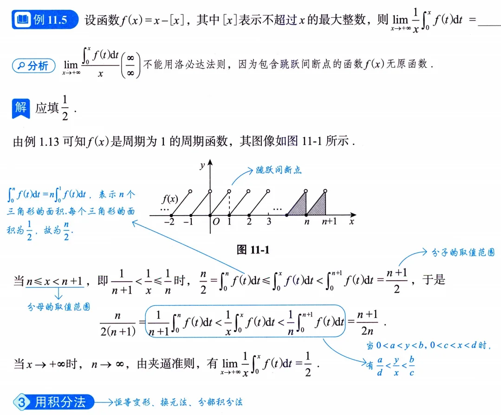
题目 \(f(x)=x-[x]\)（取整函数），求 \(\lim\limits_{x\to+\infty}\dfrac{1}{x}\displaystyle\int_0^xf(t)\,\mathrm{d}t\)。
思路 \(\dfrac{\int_0^xf(t)\,\mathrm{d}t}{x}\) 是 \(\frac{\infty}{\infty}\)，但 \(f(x)=x-[x]\) 含跳跃间断点、无原函数，洛必达法则不能用；\(f\) 以 1 为周期，用整数部分夹逼。
要点 由例1.13，\(f\) 是周期为 1 的周期函数，\(\int_0^nf(t)\,\mathrm{d}t=n\int_0^1f(t)\,\mathrm{d}t=\dfrac{n}{2}\)（\(n\) 个三角形面积，每个 \(\frac12\)）。当 \(n\le x<n+1\) 时：
\[\frac{n}{2}=\int_0^nf(t)\,\mathrm{d}t\le\int_0^xf(t)\,\mathrm{d}t<\int_0^{n+1}f(t)\,\mathrm{d}t=\frac{n+1}{2},\]
又 \(\dfrac{1}{n+1}<\dfrac{1}{x}\le\dfrac{1}{n}\)，相除（用倒数不等式 \(0<a<y<b,\ 0<c<x<d\Rightarrow\dfrac{a}{d}<\dfrac{y}{x}<\dfrac{b}{c}\)，书上手写批注）得
\[\frac{n}{2(n+1)}<\frac{1}{x}\int_0^xf(t)\,\mathrm{d}t<\frac{n+1}{2n}.\]
\(x\to+\infty\) 即 \(n\to\infty\)，由夹逼准则得极限 \(=\dfrac12\)。
注 分子分母各卡在区间里时，倒数不等式比硬除干净快得多。
例11.6（两次分部积分证等式，再放缩成不等式）
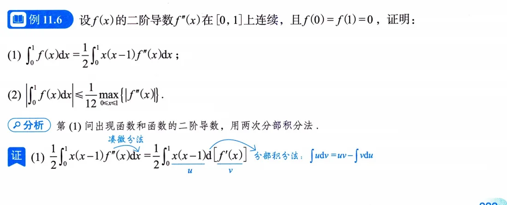
题目 \(f''(x)\) 在 \([0,1]\) 上连续，\(f(0)=f(1)=0\)。(1) 证明 \(\displaystyle\int_0^1f(x)\,\mathrm{d}x=\frac12\displaystyle\int_0^1x(x-1)f''(x)\,\mathrm{d}x\)；(2) 证明 \(\Big|\displaystyle\int_0^1f(x)\,\mathrm{d}x\Big|\le\frac{1}{12}\max\limits_{x\in[0,1]}\{|f''(x)|\}\)。
思路 (1) \(f\) 与 \(f''\) 同台，两次分部积分，把 \(x(x-1)\) 逐步"消化"掉；(2) 在 (1) 的等式上取绝对值放缩。做 (1) 前先"预判"边界项会怎么消失：\(x(x-1)\) 在端点为零、\(f\) 在端点为零——两次分部的边界项全都死得干干净净，这题才这么设计。
要点 (1) 第一次分部（\(\mathrm{d}[f'(x)]\)）：
\[\frac12\int_0^1x(x-1)f''(x)\,\mathrm{d}x=\frac12x(x-1)f'(x)\Big|_0^1-\frac12\int_0^1(2x-1)f'(x)\,\mathrm{d}x=-\frac12\int_0^1(2x-1)\,\mathrm{d}[f(x)],\]
边界项由 \(x(x-1)\) 在 \(0,1\) 为零而消失。第二次分部：
\[-\frac12\int_0^1(2x-1)\,\mathrm{d}[f(x)]=-\frac12(2x-1)f(x)\Big|_0^1+\int_0^1f(x)\,\mathrm{d}x,\]
边界项由 \(f(0)=f(1)=0\) 消失，故 \(\int_0^1f(x)\,\mathrm{d}x=\dfrac12\int_0^1x(x-1)f''(x)\,\mathrm{d}x\)。
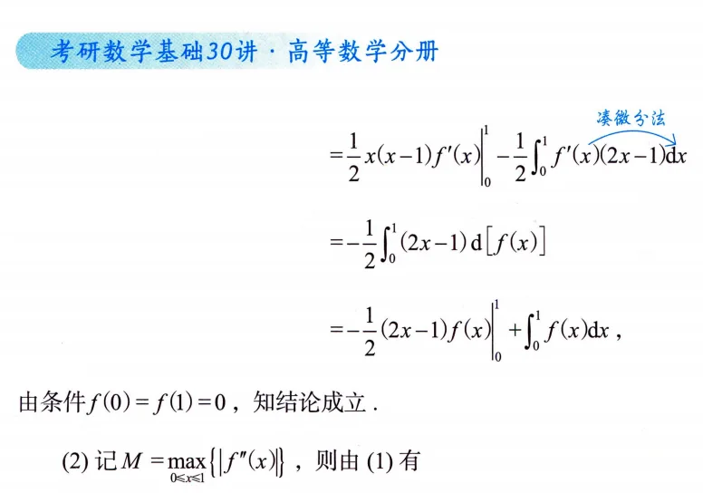
(2) 记 \(M=\max\limits_{x\in[0,1]}\{|f''(x)|\}\)，在等式上取绝对值（\(|x(x-1)|=x(1-x)\)，\(x\in[0,1]\)）：
\[\Big|\int_0^1f(x)\,\mathrm{d}x\Big|=\frac12\Big|\int_0^1x(x-1)f''(x)\,\mathrm{d}x\Big|\le\frac12\int_0^1x(1-x)|f''(x)|\,\mathrm{d}x\le\frac{M}{2}\int_0^1x(1-x)\,\mathrm{d}x=\frac{M}{2}\Big(\frac12-\frac13\Big)=\frac{M}{12}.\]
注 绝对值别丢：\(\int_0^1x(1-x)\,\mathrm{d}x=\frac12-\frac13=\frac16\)，\(M/12\) 就是这么来的；这里用的是第8讲"二、3"的积分比较性质。
例11.7（单调性路径，考研以来较复杂的变限积分）
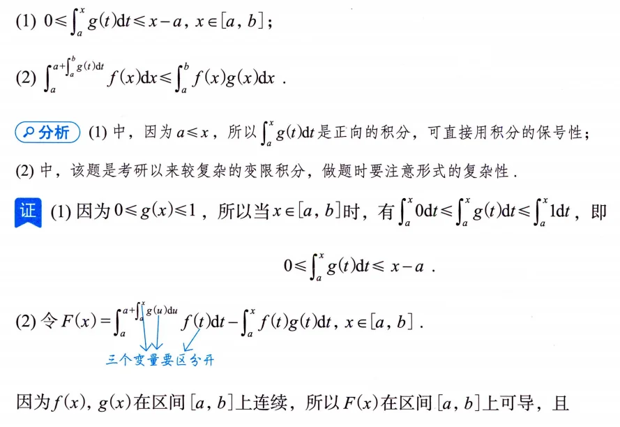
题目 设 \(f(x),g(x)\) 在 \([a,b]\) 上连续，\(0\le g(x)\le1\)，且 \(f(x)\) 单调增加，证明
\[\int_a^{\,a+\int_a^bg(t)\,\mathrm{d}t}f(x)\,\mathrm{d}x\le\int_a^bf(x)g(x)\,\mathrm{d}x.\]
思路 (1) 正向积分直接用保号性；(2) 号称考研以来较复杂的变限积分——移项构造 \(F(x)\)（左端积分上限里还嵌着一个变限积分），求导后用 (1) 与 \(f\) 的单调性判号。三个变量 \(x,u,t\) 要区分开。
要点 (1) \(0\le g(x)\le1\Rightarrow\int_a^x0\,\mathrm{d}t\le\int_a^xg(t)\,\mathrm{d}t\le\int_a^x1\,\mathrm{d}t\)，即 \(0\le\int_a^xg(t)\,\mathrm{d}t\le x-a\)。(2) 令
\[F(x)=\int_a^{\,a+\int_a^xg(u)\,\mathrm{d}u}f(x)\,\mathrm{d}x-\int_a^xf(t)g(t)\,\mathrm{d}t,\qquad x\in[a,b].\]
变限积分求导，内层 \(\int_a^xg(u)\,\mathrm{d}u\) 的导数是 \(g(x)\)（链式法则）：
\[F'(x)=f\Big[a+\int_a^xg(u)\,\mathrm{d}u\Big]g(x)-f(x)g(x)=\Big\{f\Big[a+\int_a^xg(u)\,\mathrm{d}u\Big]-f(x)\Big\}g(x).\]
由 (1)，\(a+\int_a^xg(u)\,\mathrm{d}u\le x\)；\(f\) 单调增加，故花括号 \(\le0\)，又 \(g(x)\ge0\)，所以 \(F'(x)\le0\)，\(F\) 在 \([a,b]\) 上单调减少；又 \(F(a)=0\)，故 \(F(b)\le0\)，即
\[\int_a^{\,a+\int_a^bg(t)\,\mathrm{d}t}f(x)\,\mathrm{d}x\le\int_a^bf(x)g(x)\,\mathrm{d}x.\quad\text{证毕.}\]
例11.8（拉格朗日路径，分段使用）
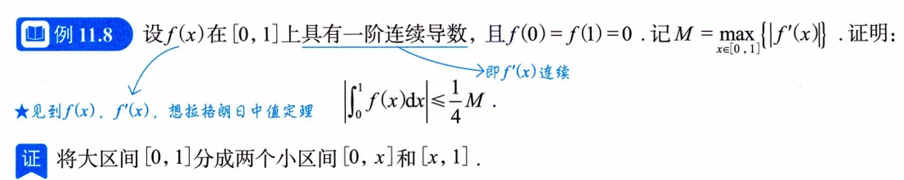
题目 \(f(x)\) 在 \([0,1]\) 上具有一阶连续导数，\(f(0)=f(1)=0\)，\(M=\max\limits_{x\in[0,1]}\{|f'(x)|\}\)，证明 \(\Big|\displaystyle\int_0^1f(x)\,\mathrm{d}x\Big|\le\dfrac{M}{4}\)。
思路 端点值都是 0，把 \([0,1]\) 拆成 \([0,x]\)、\([x,1]\) 两段各用一次拉格朗日，把 \(|f(x)|\) 用 \(M\) 与 \(x\) 表示，再放缩积分；最后对得到的"对一切 \(x\) 都成立"的界取最小值收尾。
要点 在 \([0,x]\) 上：\(f(x)-f(0)=f(x)=f'(\xi_1)x\)，\(\xi_1\in(0,x)\)，故 \(|f(x)|=|f'(\xi_1)|x\le Mx\)；在 \([x,1]\) 上：\(f(1)-f(x)=-f(x)=f'(\xi_2)(1-x)\)，\(\xi_2\in(x,1)\)，故 \(|f(x)|=|f'(\xi_2)|(1-x)\le M(1-x)\)。于是
\[\Big|\int_0^1f(x)\,\mathrm{d}x\Big|\le\int_0^1|f(x)|\,\mathrm{d}x\le M\int_0^1\min\{x,1-x\}\,\mathrm{d}x\le M\int_0^xt\,\mathrm{d}t+M\int_x^1(1-t)\,\mathrm{d}t=M\Big[\frac{x^2}{2}+\frac{(1-x)^2}{2}\Big].\]
（更细的写法：对任意取定的 \(x\)，\(\int_0^x|f|\le M\int_0^xt\,\mathrm{d}t\)、\(\int_x^1|f|\le M\int_x^1(1-t)\,\mathrm{d}t\)，两段分别用各自的估计。）上式对每个 \(x\in[0,1]\) 都成立，而 \(\dfrac{x^2}{2}+\dfrac{(1-x)^2}{2}=x^2-x+\dfrac12=\left(x-\dfrac12\right)^2+\dfrac14\) 在 \(x=\dfrac12\) 处取最小值 \(\dfrac14\)，故 \(\Big|\int_0^1f(x)\,\mathrm{d}x\Big|\le\dfrac{M}{4}\)。
注 书上原话是"其中 \(\cdots\ge\frac14\)，故得证"——本质是右端对 \(x\) 取最小；自己写时明确"取 \(x=\frac12\)（最小值点）"更严谨。
例11.9（泰勒路径，展开点让一阶项归零）
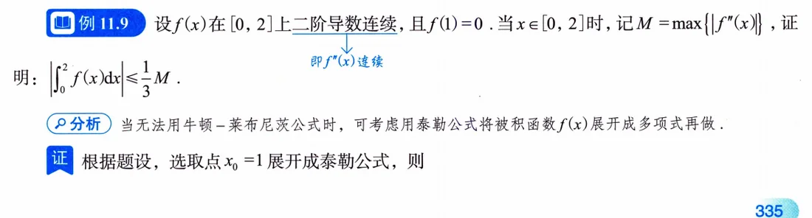
题目 \(f''(x)\) 在 \([0,2]\) 上连续，\(f(1)=0\)，\(M=\max\limits_{x\in[0,2]}\{|f''(x)|\}\)，证明 \(\Big|\displaystyle\int_0^2f(x)\,\mathrm{d}x\Big|\le\dfrac{M}{3}\)。
思路 书上"分析"：用不上牛顿-莱布尼茨公式（没有现成的 \(f'\) 积分关系），考虑用泰勒公式把被积函数 \(f(x)\) 展开成多项式再做。展开点取已知值点 \(x_0=1\)（\(f(1)=0\)），区间 \([0,2]\) 恰好关于它对称，一阶项积分自动为零。
要点 在 \(x_0=1\) 处展开：
\[f(x)=f(1)+f'(1)(x-1)+\frac{f''(\xi)}{2}(x-1)^2=f'(1)(x-1)+\frac{f''(\xi)}{2}(x-1)^2\]
（\(\xi\) 介于 \(x\) 与 \(1\) 之间，是关于 \(x\) 的函数）。两边在 \([0,2]\) 积分，一阶项由 \(\int_0^2(x-1)\,\mathrm{d}x=\left[\dfrac{(x-1)^2}{2}\right]_0^2=0\) 消掉：
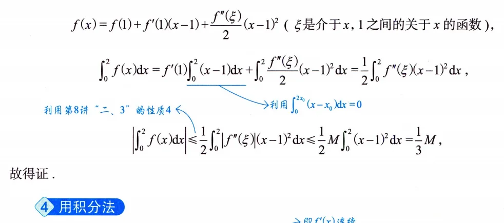
\[\int_0^2f(x)\,\mathrm{d}x=f'(1)\int_0^2(x-1)\,\mathrm{d}x+\frac12\int_0^2f''(\xi)(x-1)^2\,\mathrm{d}x=\frac12\int_0^2f''(\xi)(x-1)^2\,\mathrm{d}x,\]
故
\[\Big|\int_0^2f(x)\,\mathrm{d}x\Big|=\frac12\Big|\int_0^2f''(\xi)(x-1)^2\,\mathrm{d}x\Big|\le\frac12\int_0^2|f''(\xi)|(x-1)^2\,\mathrm{d}x\le\frac{M}{2}\int_0^2(x-1)^2\,\mathrm{d}x=\frac{M}{2}\cdot\frac{2}{3}=\frac{M}{3}.\]
注 展开点选在已知函数值处、并让一阶项积分恰好为零，是泰勒法证积分不等式的标准起手式。
例11.10（积分法路径："函数 × 三角函数"分部积分）
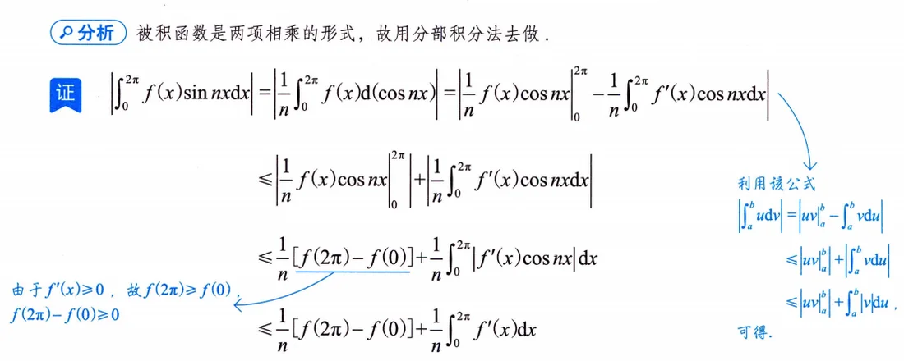
题目 \(f'(x)\) 在 \([0,2\pi]\) 上连续，且 \(f'(x)\ge0\)，证明对 \(n=1,2,\cdots\)，
\[\Big|\int_0^{2\pi}f(x)\sin nx\,\mathrm{d}x\Big|\le\frac{2}{n}\big[f(2\pi)-f(0)\big].\]
思路 被积函数是"两项相乘"，走积分法：分部积分把 \(f\) 换成 \(f'\)（好估，因为 \(f'\ge0\) 时 \(|f'|=f'\) 且能积出来），三角函数的 \(n\) 留在分母。收尾三件套：\(\cos 2n\pi=\cos0=1\)、\(|\cos nx|\le1\)、\(\int_0^{2\pi}f'=f(2\pi)-f(0)\)。
要点 分部积分（\(u=f(x)\)，\(\mathrm{d}v=\sin nx\,\mathrm{d}x\)）：
\[\int_0^{2\pi}f(x)\sin nx\,\mathrm{d}x=-\frac{f(x)\cos nx}{n}\bigg|_0^{2\pi}+\frac{1}{n}\int_0^{2\pi}f'(x)\cos nx\,\mathrm{d}x.\]
取绝对值。边界项：\(\cos 2n\pi=\cos0=1\)，故
\[\bigg|-\frac{f(x)\cos nx}{n}\bigg|_0^{2\pi}\bigg|=\frac{1}{n}\big|f(0)-f(2\pi)\big|=\frac{f(2\pi)-f(0)}{n}\]
（\(f'\ge0\Rightarrow f(2\pi)\ge f(0)\)，保证去绝对值不变号）。第二项：
\[\frac{1}{n}\bigg|\int_0^{2\pi}f'(x)\cos nx\,\mathrm{d}x\bigg|\le\frac{1}{n}\int_0^{\pi}f'(x)|\cos nx|\,\mathrm{d}x\le\frac{1}{n}\int_0^{2\pi}f'(x)\,\mathrm{d}x=\frac{f(2\pi)-f(0)}{n}.\]
两项相加即得 \(\Big|\int_0^{2\pi}f(x)\sin nx\,\mathrm{d}x\Big|\le\dfrac{2}{n}\big[f(2\pi)-f(0)\big]\)。
注 这题条件里 \(f'\ge0\) 一石二鸟：既保边界项去绝对值的方向，又把 \(\int|f'|\) 写成 \(\int f'\) 才能用牛顿-莱布尼茨。放缩的依据是第8讲的比较性质（方法框原文特意提了它）。
例11.11（牛顿-莱布尼茨路径：双端点各写一遍）
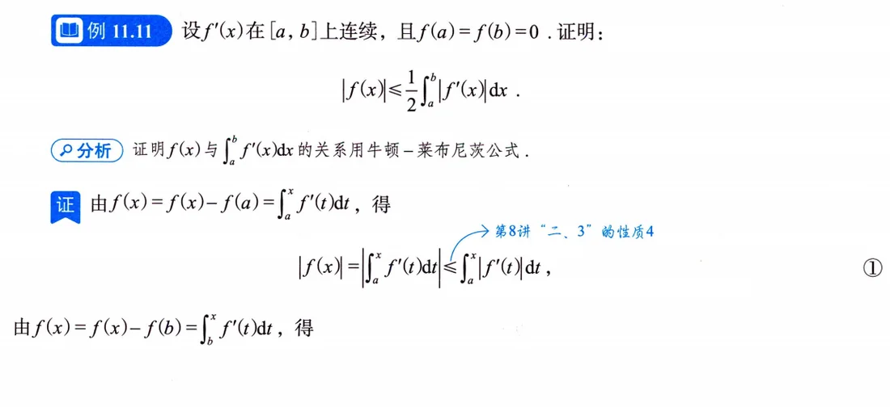
题目 \(f'(x)\) 在 \([a,b]\) 上连续，且 \(f(a)=f(b)=0\)，证明对任意 \(x\in[a,b]\)，\(|f(x)|\le\dfrac12\displaystyle\int_a^b|f'(x)|\,\mathrm{d}x\)。
思路 条件档位正中"牛顿-莱布尼茨公式"方法框的靶心：\(f'\) 连续、两个端点值都是 0。把 \(f(x)\) 分别写成从左端、右端出发的变限积分，各取绝对值相加，两段拼成全区间。
要点 由 \(f(a)=0\) 与牛顿-莱布尼茨公式：
\[\big|f(x)\big|=\big|f(x)-f(a)\big|=\Big|\int_a^xf'(t)\,\mathrm{d}t\Big|\le\int_a^x\big|f'(t)\big|\,\mathrm{d}t.\qquad ①\]
同理由 \(f(b)=0\)：
\[\big|f(x)\big|=\big|f(x)-f(b)\big|=\Big|\int_b^xf'(t)\,\mathrm{d}t\Big|=\Big|\int_x^bf'(t)\,\mathrm{d}t\Big|\le\int_x^b\big|f'(t)\big|\,\mathrm{d}t.\qquad ②\]
①+②：
\[2\big|f(x)\big|\le\int_a^x\big|f'(t)\big|\,\mathrm{d}t+\int_x^b\big|f'(t)\big|\,\mathrm{d}t=\int_a^b\big|f'(x)\big|\,\mathrm{d}x,\quad\text{证毕.}\]
注 只有单端点为零（比如习题11.5 只有 \(f(0)=0\)）时，就只能写一边，得到的是 \(\int_a^x|f'|\)，再往下放缩成 \(M(x-a)\) 套路收尾——例题与习题一对照，"写一边还是写两边"就清楚了。
易错点与技巧
- 中值点带参数就别取极限：被积函数含 \(n\) 时 \(\xi=\xi_n\)（\(\eta=\eta_n\)），书上专门加注"此时不能用 \(\lim\limits_{n\to\infty}e^{-\eta_n^n}=0\)"（印P331）。正确的收尾是"有界 × 无穷小"。
- \(f(x)=x-[x]\) 这类含跳跃间断点的函数没有原函数，\(\frac{\infty}{\infty}\) 型积分极限别上来就洛必达（印P333，例11.5）。
- 凑微分先于硬算：\((n+1)x^n\,\mathrm{d}x=\mathrm{d}(x^{n+1})\)、\(e^{\sin x}\cos x\,\mathrm{d}x=\mathrm{d}(e^{\sin x})\)，先凑再放缩，例11.2、11.3、11.4 全是这么破的（印P331–333）。
- 分部积分证等式时，边界项为什么是零要交代清楚（\(x(x-1)\) 端点为零、\(f(0)=f(1)=0\)），不能无声消失（印P333–334，例11.6）。
- 构造变限辅助函数时几个变量分开写（例11.7 的 \(x,u,t\)，印P334）；上限里嵌变限积分，求导记得链式法则乘内层导数 \(g(x)\)。
- 泰勒展开点选在已知函数值的点；能像例11.9 那样凑出 \(\int_0^{2x_0}(x-x_0)\,\mathrm{d}x=0\) 消掉 \(f'(x_0)\)，就赚到了（印P335–336）。
- 证"存在 \(\xi\) 使 \(f''(\xi)<0\)"这类题：先把积分条件翻译成函数值，再在数轴上摆点——函数值相等用罗尔，不等用拉格朗日（例11.2 与习题11.1 同模板，印P331）。
- \(|x(x-1)|=x(1-x)\)（\(x\in[0,1]\)）——积分号下取绝对值前先把被积函数的绝对值拆干净，例11.6(2)、例11.9 的 \((x-1)^2\) 同理（印P334、336）。
- 例11.10 型收尾三件套一个都不能少：\(\cos 2n\pi=\cos0=1\) 拍平边界项、\(|\cos nx|\le1\) 放缩、\(\int_0^{2\pi}f'=f(2\pi)-f(0)\) 收尾；\(f'\ge0\) 的作用（保证 \(f(2\pi)\ge f(0)\)、\(|f'|=f'\)）要在卷面上点明（印P336）。
- 两端点都为零时牛顿-莱布尼茨"左右各写一遍再相加取半"（例11.11 的式①②）；只有一个端点为零就只写一边，往下用 \(\int_a^x|f'|\le M(x-a)\) 放缩（习题11.5，印P336–337、340）。
- 做题次序照考情分析的"重难点"来：先求积分（或放缩积分），再求极限；\(\lim\int\) 型永远别先对 \(n\) 求极限（印P329、332–333）。
- 分子分母各卡在两个数之间时，用倒数不等式 \(0<a<y<b,\ 0<c<x<d\Rightarrow\dfrac{a}{d}<\dfrac{y}{x}<\dfrac{b}{c}\) 直接除（印P333 手写批注）。
考点与方法补充（站注）
以下均为站注（自学站补充，非原书内容），口径来自站注素材包（agent-reach 全网调研 + 新东方真题大数据）。
站注·考频定位：积分等式与积分不等式属"证明题储备"型考点——不年年考，但一考就是解答题大分；素材包 C-L11 列的高频入口是"变限积分构造函数＋单调性""分部积分出对称结构"，正是例11.7 与例11.6 的路数。与本讲共享"构造辅助函数"骨架的中值定理证明题，在近15年真题大数据里属第二梯队（隔年一道大题，素材包 B/C-L6）。另外素材包 B"命题趋势"里提到积分计算复杂度持续走高（多次换元），意味着夹逼路线上"算出上下界"这一步本身也在变难，第9讲的计算功底是本讲的地基。
站注·与第6讲的联动：第6讲中值定理的两大套路——构造辅助函数（乘积/商求导公式的逆用）、泰勒在端点/中点展开——在本讲各有一记回响：例11.7 的 \(F(x)=\int_a^{a+\int_a^xg}f-\int_a^xfg\) 就是"移项造函数"思想的积分版；例11.9 在中点 \(x_0=1\) 展开消一阶项，与第6讲"对称区间取中点"一脉相承。复习时两讲对着看，构造思路能省一半记忆量。
站注·张宇方法论"证明题不能放弃"：张宇公开课/经验贴的共识（素材包 A.1）：中值定理、积分不等式这类证明题是数一数二大题常客，"平时不动手，考场上写不出来"。本讲 11 道例题建议全部遮住解答自己先写一遍，特别是例11.7（书上标三星）、例11.10、例11.11 三道——写不出来的步骤，就是考场上会卡住的地方。同源的方法论还有"尽快结束纯听课阶段，自己动手最重要"（素材包 A.1）：本讲看懂 ≠ 会证，判型（连续？一阶可导？二阶可导？）→ 选路 → 动笔，三步缺一不可。
站注·书系衔接：按素材包 A.2 的路线，基础阶段本书配套《300题》巩固，强化阶段《高数18讲》会把这些证明套路升级成题型库。素材包 A.1.d 提到强化36讲第1讲主题即"判定类型，做好计算"——本讲"先看条件档位选路线"就是"判型"思想的预演。真题使用上（素材包 A.4）：本讲内容至少做近十年真题里的中值/积分不等式大题，随机抽 5 道独立完成、正确率 \(\ge90\%\) 才算过关。
站注·归因提醒：网上流传的"三大计算"是杨超的提法，不是张宇的，别在笔记里混用；张宇这边对应的关键词是"判定类型，做好计算"和动手算。
知识清单自测
自测题
1. 设 \(\varphi(x)\) 是可微函数 \(f(x)\) 的反函数，且 \(f(1)=0\)，证明：\(\displaystyle\int_0^1\left[\int_0^{f(x)}\varphi(t)\,\mathrm{d}t\right]\mathrm{d}x=2\displaystyle\int_0^1xf(x)\,\mathrm{d}x\)。（习题11.3）
查看答案
解 记 \(G(x)=\displaystyle\int_0^{f(x)}\varphi(t)\,\mathrm{d}t\)，左端 \(I=\displaystyle\int_0^1G(x)\,\mathrm{d}x\)。被积函数是变限积分，分部积分：
\[I=\Big[xG(x)\Big]\Big|_0^1-\int_0^1xG'(x)\,\mathrm{d}x=G(1)-\int_0^1x\varphi[f(x)]f'(x)\,\mathrm{d}x.\]
由 \(f(1)=0\) 得 \(G(1)=\displaystyle\int_0^0\varphi(t)\,\mathrm{d}t=0\)，故 \(I=-\displaystyle\int_0^1x\varphi[f(x)]f'(x)\,\mathrm{d}x\)。令 \(u=f(x)\)（\(x=\varphi(u)\)，\(\mathrm{d}u=f'(x)\,\mathrm{d}x\)）：
\[I=-\int_{f(0)}^{0}\varphi(u)\cdot\varphi(u)\,\mathrm{d}u=\int_0^{f(0)}\varphi^2(u)\,\mathrm{d}u.\]
另一方面，对右端 \(J=\displaystyle\int_0^1xf(x)\,\mathrm{d}x\) 作同一换元并分部（注意 \(\varphi(f(0))=0\)，\(\varphi(0)=1\)）：
\[J=\int_{f(0)}^{0}\varphi(u)\cdot u\cdot\varphi'(u)\,\mathrm{d}u=\Big[\tfrac12u\varphi^2(u)\Big]_{f(0)}^{0}-\tfrac12\int_{f(0)}^{0}\varphi^2(u)\,\mathrm{d}u=\tfrac12\int_0^{f(0)}\varphi^2(u)\,\mathrm{d}u=\tfrac12I.\]
故 \(I=2J\)，得证。（原书解答做到第一步分部后注明"继而通过换元等手段即可完成证明"。）
2. 证明：\(\displaystyle\int_0^{\pi/2}\frac{\cos x}{1+x^2}\,\mathrm{d}x\ge\int_0^{\pi/2}\frac{\sin x}{1+x^2}\,\mathrm{d}x\)。（习题11.2）
查看答案
解 只需证 \(\displaystyle\int_0^{\pi/2}\frac{\cos x-\sin x}{1+x^2}\,\mathrm{d}x\ge0\)。在 \(\frac{\pi}{4}\) 处拆段，后一段令 \(x=\frac{\pi}{2}-t\)：
\[\int_{\pi/4}^{\pi/2}\frac{\cos x-\sin x}{1+x^2}\,\mathrm{d}x=\int_0^{\pi/4}(\sin t-\cos t)\cdot\frac{1}{1+\left(\frac{\pi}{2}-t\right)^2}\,\mathrm{d}t,\]
与第一段合并：
\[\int_0^{\pi/4}(\cos x-\sin x)\left[\frac{1}{1+x^2}-\frac{1}{1+\left(\frac{\pi}{2}-x\right)^2}\right]\mathrm{d}x\ge0,\]
因为 \(0\le x\le\frac{\pi}{4}\) 时 \(\cos x\ge\sin x\) 且 \(1+x^2\le1+\left(\frac{\pi}{2}-x\right)^2\)，故原式得证。（另一路：拆段后对 \(\frac{1}{1+x^2}\) 分别用积分中值定理，得 \((\sqrt2-1)\left[\frac{1}{1+\xi^2}-\frac{1}{1+\eta^2}\right]\ge0\)，其中 \(\xi\le\eta\)，见原书方法二，印P338。）
3. 设 \(f(x)\) 在 \([a,b]\) 上连续且严格单调增加，证明：\((a+b)\displaystyle\int_a^bf(x)\,\mathrm{d}x<2\int_a^bxf(x)\,\mathrm{d}x\)。（习题11.4）
查看答案
解 移项构造 \(F(t)=(a+t)\displaystyle\int_a^tf(x)\,\mathrm{d}x-2\int_a^txf(x)\,\mathrm{d}x,\ t\in[a,b]\)，则
\[F'(t)=\int_a^tf(x)\,\mathrm{d}x+(a+t)f(t)-2tf(t)=\int_a^tf(x)\,\mathrm{d}x-(t-a)f(t)=\int_a^t\big[f(x)-f(t)\big]\mathrm{d}x.\]
因为 \(f\) 严格单调增加，\(x<t\) 时 \(f(x)-f(t)<0\)，故 \(F'(t)<0\)，\(F(t)\) 严格单调减少；又 \(F(a)=0\)，所以 \(F(b)<0\)，即 \((a+b)\int_a^bf(x)\,\mathrm{d}x-2\int_a^bxf(x)\,\mathrm{d}x<0\)，得证。（原书还给了方法二：把 \(2\int_a^bxf\) 写成 \(\int_a^b[(x-a)+(x-b)+a+b]f\) 拆项比较，印P339–340。）
4. 设 \(f'(x)\) 在 \([0,a]\) 上连续，且 \(f(0)=0\)，\(M=\max\limits_{0\le x\le a}|f'(x)|\)，证明：\(\Big|\displaystyle\int_0^af(x)\,\mathrm{d}x\Big|\le\dfrac{Ma^2}{2}\)。（习题11.5）
查看答案
解 方法一（原书，印P340）：由牛顿-莱布尼茨公式，\(f(x)=f(x)-f(0)=\displaystyle\int_0^xf'(t)\,\mathrm{d}t\)，故
\[|f(x)|=\Big|\int_0^xf'(t)\,\mathrm{d}t\Big|\le\int_0^x|f'(t)|\,\mathrm{d}t\le\int_0^xM\,\mathrm{d}t=Mx.\]
于是
\[\Big|\int_0^af(x)\,\mathrm{d}x\Big|\le\int_0^a|f(x)|\,\mathrm{d}x\le\int_0^aMx\,\mathrm{d}x=\frac{Ma^2}{2}.\]
方法二：由拉格朗日中值定理，\(f(x)=f(x)-f(0)=f'(\xi)x\)，故 \(|f(x)|\le Mx\)，下同。（这正是"联系 \(f\) 与 \(f'\) 只有两招"的 11.5注 原型题。）
5. 设 \(f(x)\) 在区间 \([0,1]\) 上有二阶导数，且 \(f\left(\dfrac12\right)=1\)，\(f''(x)>0\)，证明：\(\displaystyle\int_0^1f(x)\,\mathrm{d}x\ge1\)。（习题11.6）
查看答案
解 在 \(x_0=\frac12\) 处展开泰勒公式：
\[f(x)=f\left(\frac12\right)+f'\left(\frac12\right)\left(x-\frac12\right)+\frac{f''(\xi)}{2!}\left(x-\frac12\right)^2,\]
其中 \(\xi\) 介于 \(x\) 与 \(\frac12\) 之间。由 \(f''(x)>0\) 得 \(f''(\xi)>0\)，于是
\[f(x)\ge f\left(\frac12\right)+f'\left(\frac12\right)\left(x-\frac12\right).\]
两边在 \([0,1]\) 上对 \(x\) 积分，一阶项 \(\displaystyle\int_0^1\left(x-\frac12\right)\mathrm{d}x=0\)，故
\[\int_0^1f(x)\,\mathrm{d}x\ge\int_0^1\left[f\left(\frac12\right)+f'\left(\frac12\right)\left(x-\frac12\right)\right]\mathrm{d}x=f\left(\frac12\right)=1.\]